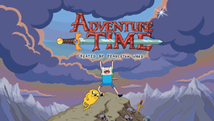

artigo Discussão
Origem:Wikipedia, a enciclopedia livre.
Hora de Aventura (português brasileiro) ou Hora de Aventuras
(português europeu) (em inglês: Adventure Time)
é uma série de desenho animado americana criada por
Pendleton Ward para o Cartoon Network. A série segue
as aventuras de Finn (dublado por Jeremy Shada), um
garoto humano aventureiro, e o seu melhor amigo e irmão
adotivo Jake (dublado por John DiMaggio) , um cão com
poderes que lhe permitem alterar a forma e tamanho
conforme a sua vontade. Finn e Jake habitam a pós-apocalíptica Terra
de Ooo, onde interagem com os outros personagens principais
da série: Princesa Jujuba (dublada por Hynden Walch[1]),
o Rei Gelado (dublado por Tom Kenny) e Marceline, a Rainha
dos Vampiros (dublada por Olivia Olson). Hora de Aventura
é exibido na Cartoon Network.
A série é baseada numa curta produzida para o Random! Cartoons, um programa incubador de
séries animadas da Nicktoons e da Frederator Studios. Depois do curta se tornar um viral na
Internet, o Cartoon Network selecionou-o para uma série completa, que estreou oficialmente em
5 de abril de 2010.ª série, que é grandemente inspirada pelo RPG de fantasia Dungeons &
Dragons assim como pelos jogos eletrônicos em geral, é produzida via animação desenhada à
mão. Os episódios são desenvolvidos através do processo de storyboard, e um único episódio
demora aproximadamente entre oito a nove meses para ser terminado, apesar de vários
episódios serem feitos simultaneamente. Os membros do elenco de Adventure Time gravam as
suas falas em conjunto em sessões grupais, ao contrário da técnica tradicional com sessões
diferentes para cada dublador. A série também frequentemente emprega atores convidados
para personagens menores.
